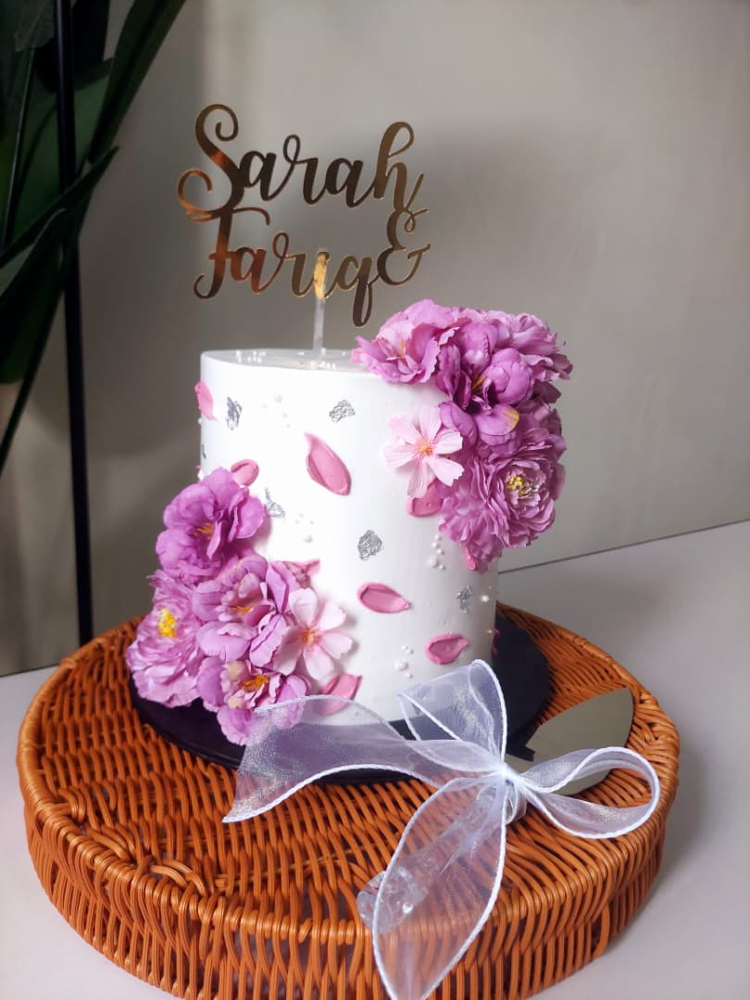
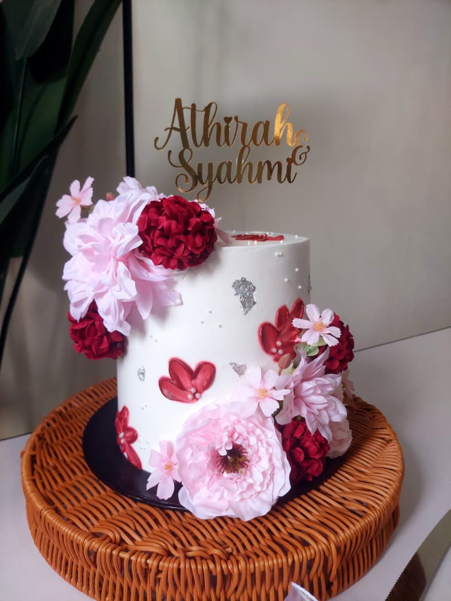
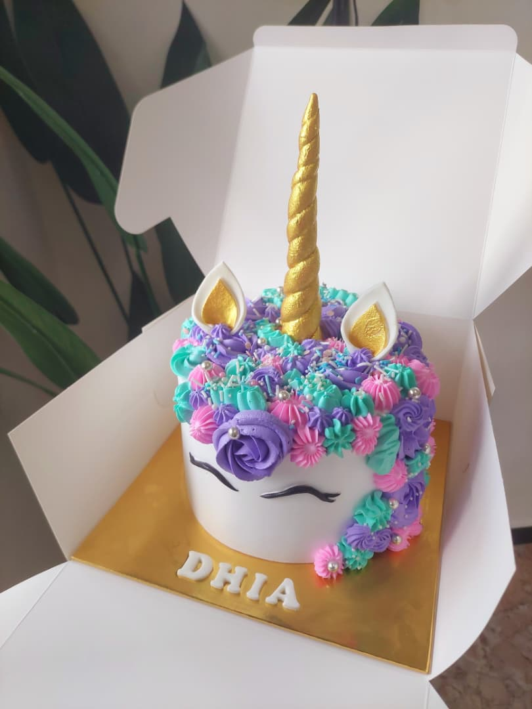

Home
Home
 Education
Education
 Favorite Dessert
Favorite Dessert
My Favorite Desserts
I really enjoy trying different kinds of desserts. Sweet dishes make me happy, and it is one of my favorite things in life.
My Top Favorite Desserts
| Desserts | Description | Rating |
|---|---|---|
| Strawberry Shortcake | refreshing, fruity, and delicately sweet flavor | ★★★★★ |
| Biscoff Cheesecake | It is a perfect combination of creamy and salty | |
| Chocolate Cake | balances deep, bitter-sweet cocoa notes with sugary sweetness |
Cikya Artworks



In the family section, I have mentioned Cikya, who is a baker, and these are some of her artworks. As you can see, her artworks are so neat and amazing. She is my inspiration to try anything that I want and never give up on what I do until I achieve my goals.
Why I Love Dessert
Desserts can improve my mood, I enjoy discovering new dessert flavors, eating dessert with family and friends is fun, and desserts create happy memories